BOOKMYER EXCAVATING LLCExcavation & Grading Contractor — York, PA
Stone driveways, shed pads, grading, drainage & stone delivered — serving York County homeowners. No job too small.
Stone driveways, shed pads, grading, drainage & stone delivered — serving York County homeowners. No job too small.

WHO WE ARE
Bookmyer Excavating LLC is a family-run excavation and grading contractor based in York, Pennsylvania. We specialize in residential excavation and the small jobs that bigger companies won't return a call for — stone and gravel driveways, shed pads, yard grading, drainage fixes, and dirt work of every kind for homeowners across York County.
With our own excavator, skid loader, backhoe, and dump truck, we show up with the right machine for the job — not the biggest one we can bill for. Every project gets the same attention to detail, honest pricing, and clean finish, whether it's a full site prep or a single load of topsoil delivered and spread.
WHAT WE DO
From driveways and shed pads to drainage and delivery, we have the equipment and experience to handle it all — residential and commercial.
Homeowner excavation done right — foundation digs, backyard excavation, stump removal, and the small excavation jobs bigger York, PA outfits pass on.
Precision grading and yard leveling for proper drainage, new lawns, and solid building pads — from full regrades and finish grading to fixing low spots.
New stone driveway installation, gravel driveway regrading, and pothole and washout repair — built on a properly compacted base that lasts.
Level, compacted gravel shed pads and garage pads, framed with timbers and ready for delivery day. Sized right the first time.
French drains, downspout burial, storm water pits, and dry wells that move water away from your foundation and yard for good.
Skid loader and track loader work for tight-access jobs — spreading stone and topsoil, regrading, pad prep, and moving material where trucks can't go.
Backhoe for hire for digging, trenching, loading, and light demo — the right size machine for residential jobs around York County.
Stone delivered, screened topsoil, and fill hauled anywhere in York County with our own dump truck — and unlike the quarry, we can spread and grade it too.
Asphalt millings delivered and installed — an affordable, low-dust alternative to gravel that packs down almost like pavement.
Permanent bamboo removal — we dig out the entire rhizome root system, haul it away, and regrade with clean topsoil so it doesn't come back.
Brush and land clearing, grubbing, and rough grading to get your building project, pole barn, or new lawn started on the right footing.
Trenching for water, electric, and drain lines, plus septic tank sets, propane tank burial, and other underground utility work.
SMALL JOBS WELCOME
Ever tried getting an excavation company to call you back about a small job? So have our customers. Bookmyer Excavating is a small, family-run operation built for exactly the jobs the big contractors skip — residential excavation, backyard dirt work, and one-day projects for homeowners across York County.
If you've been searching for an excavator for small jobs or a local excavator for hire near York, PA — you found us. Typical small jobs we handle:

Contact us today for a free, no-obligation estimate. We're here to help bring your vision to life.
Get Your Free EstimateOUR WORK
Take a look at some of the projects we've completed for our satisfied customers.

Custom drainage solution with gravel bed to protect a residential property.

Large-scale grading and site preparation with erosion control.

Excavation and material hauling for waterfront property improvement.

Yard grading and gravel pad for a new residential garage build.

Driveway grading and preparation for fresh asphalt paving.

Precision grading for a backyard patio and outdoor living space.
SEE OUR WORK
A closer look at our equipment, job sites, and completed projects.


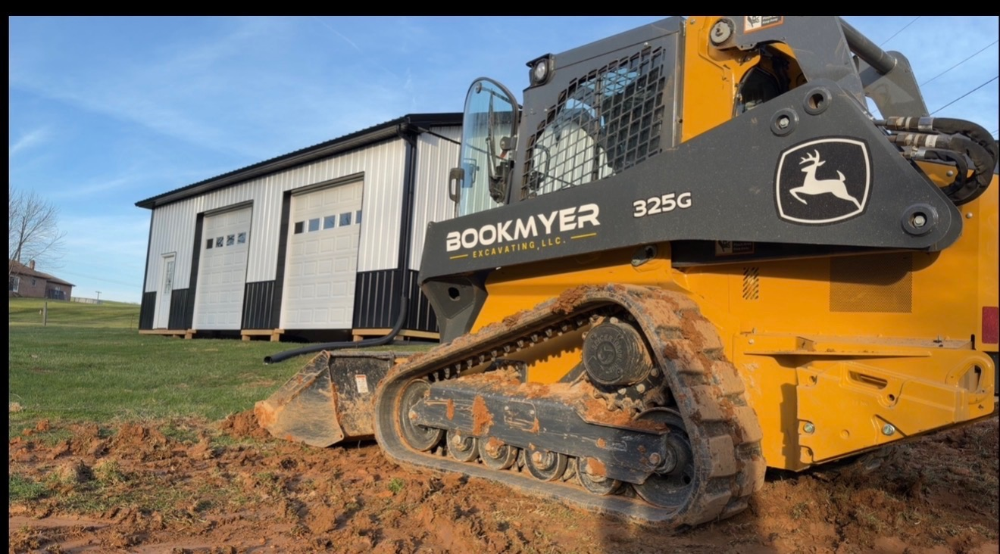
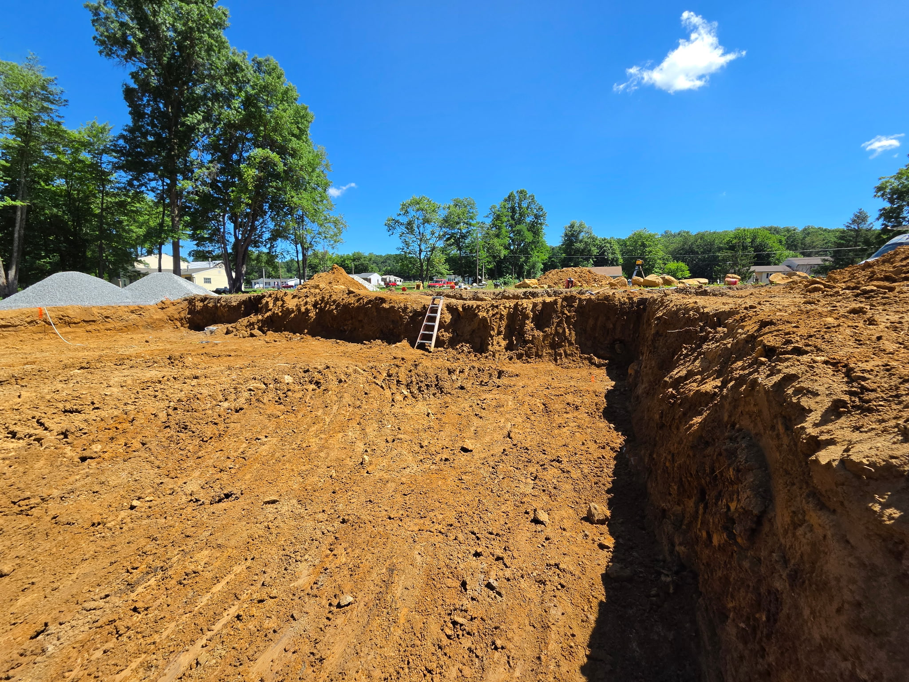
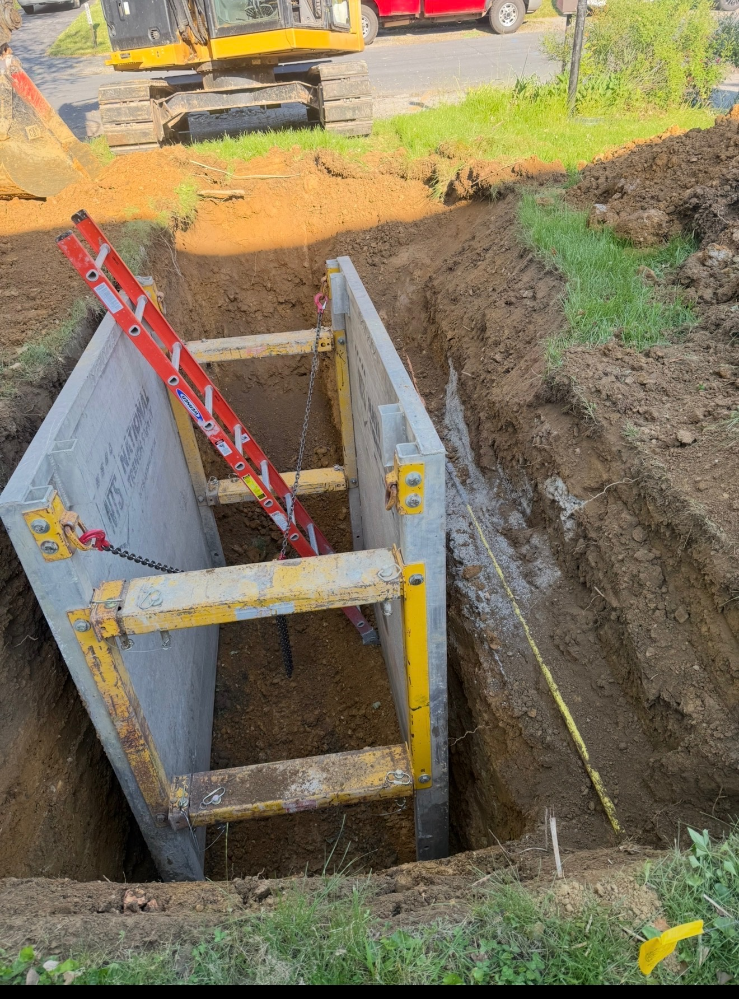
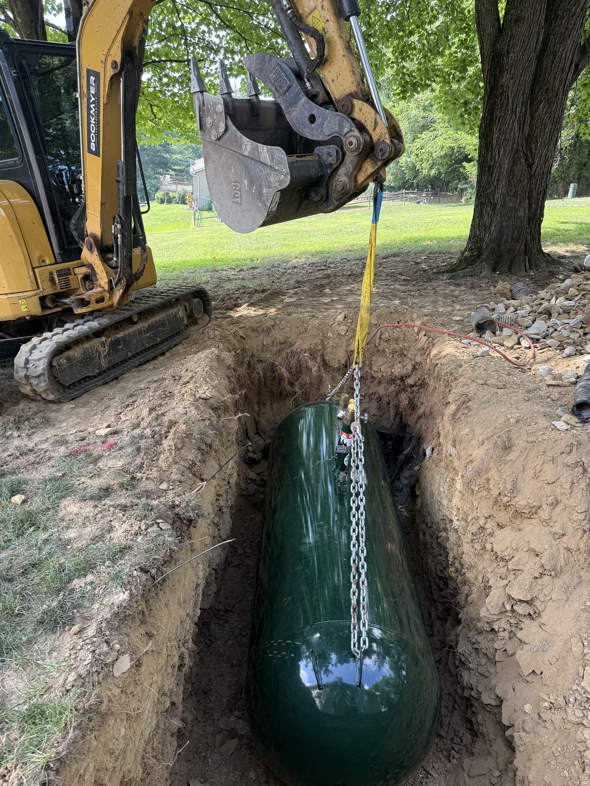
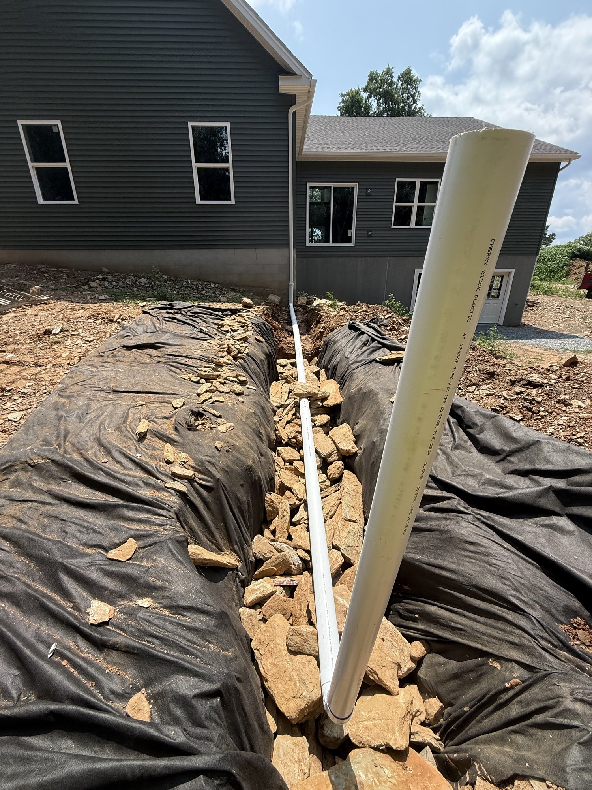
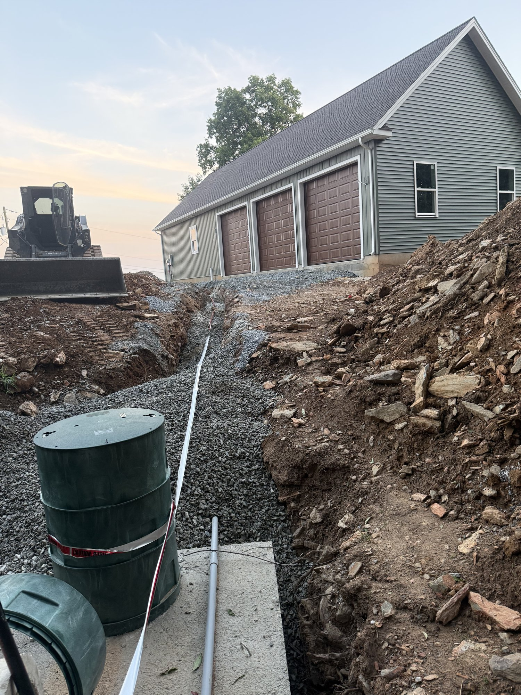
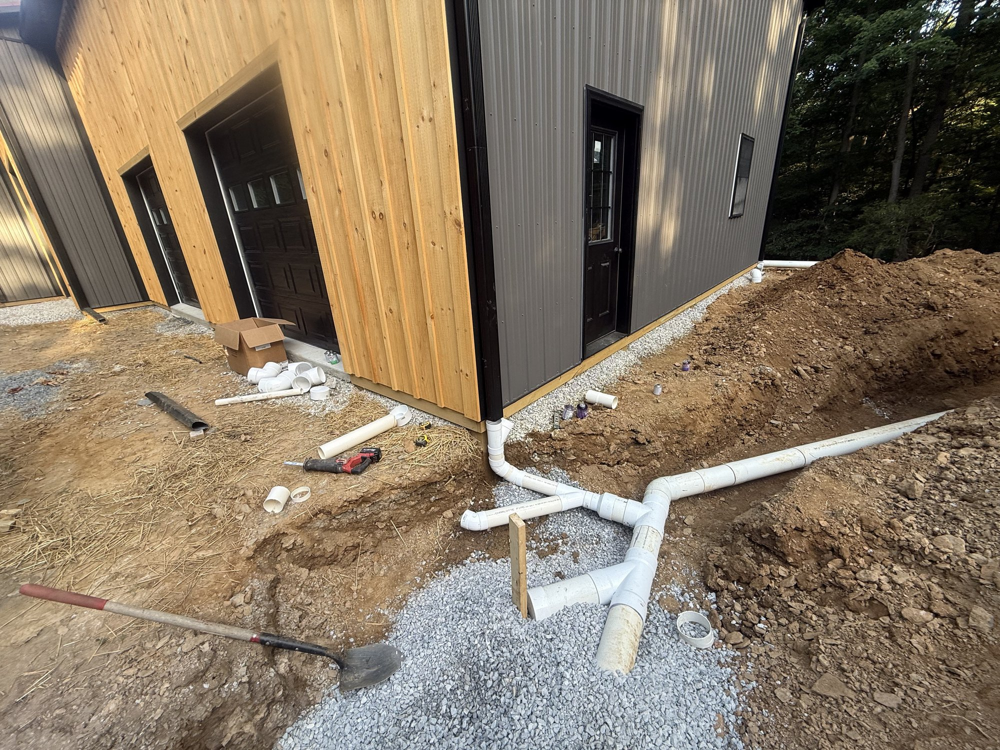
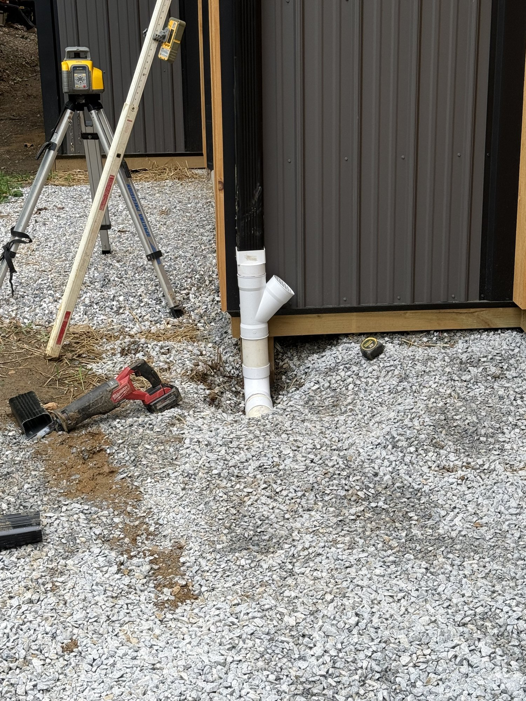
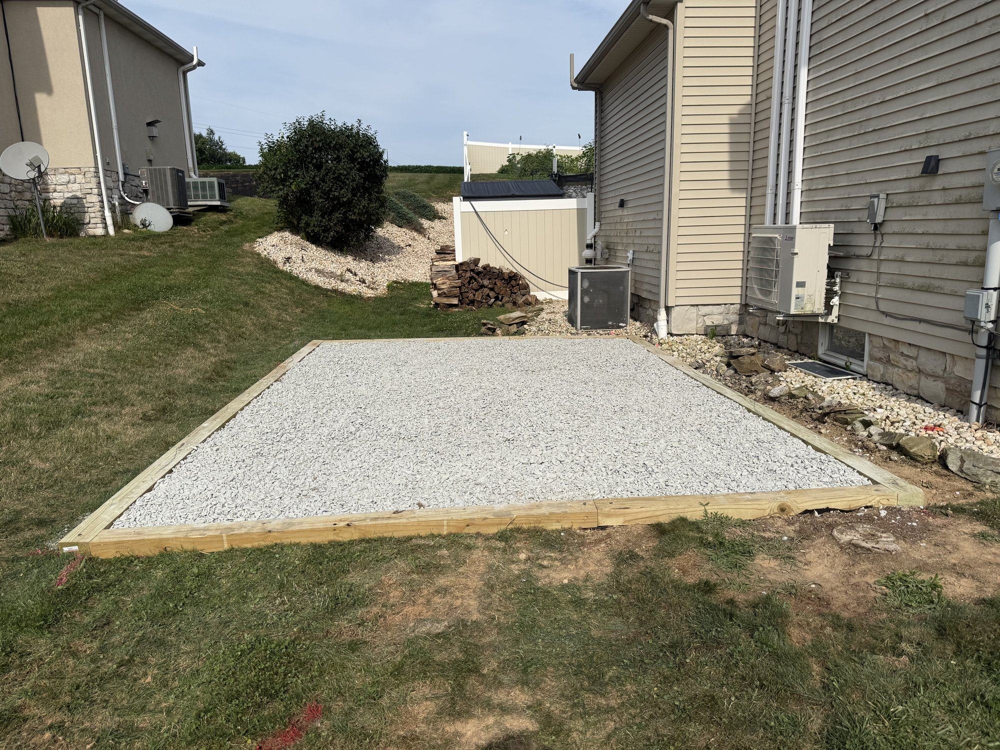
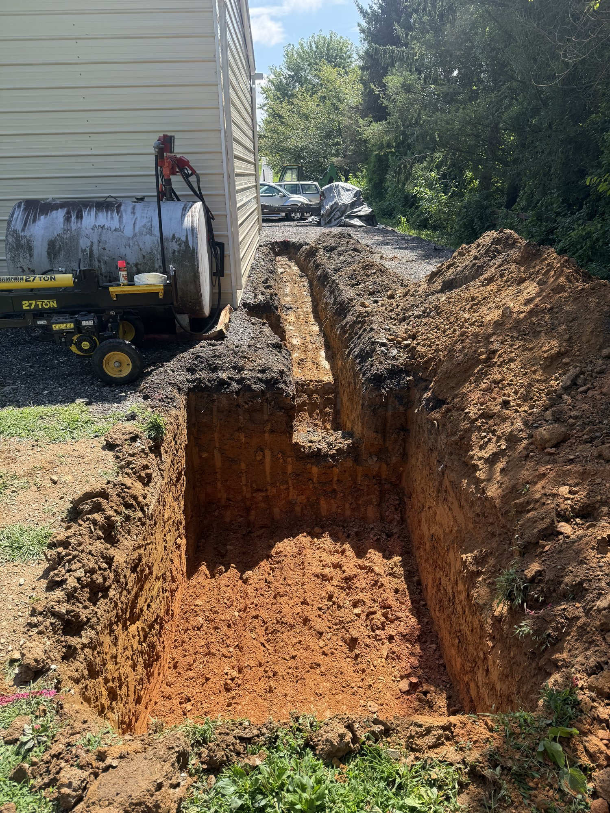
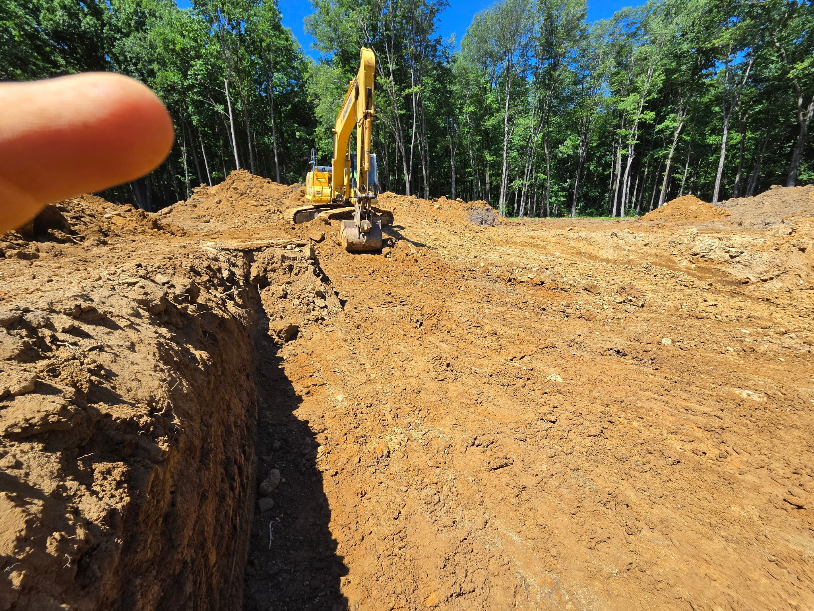
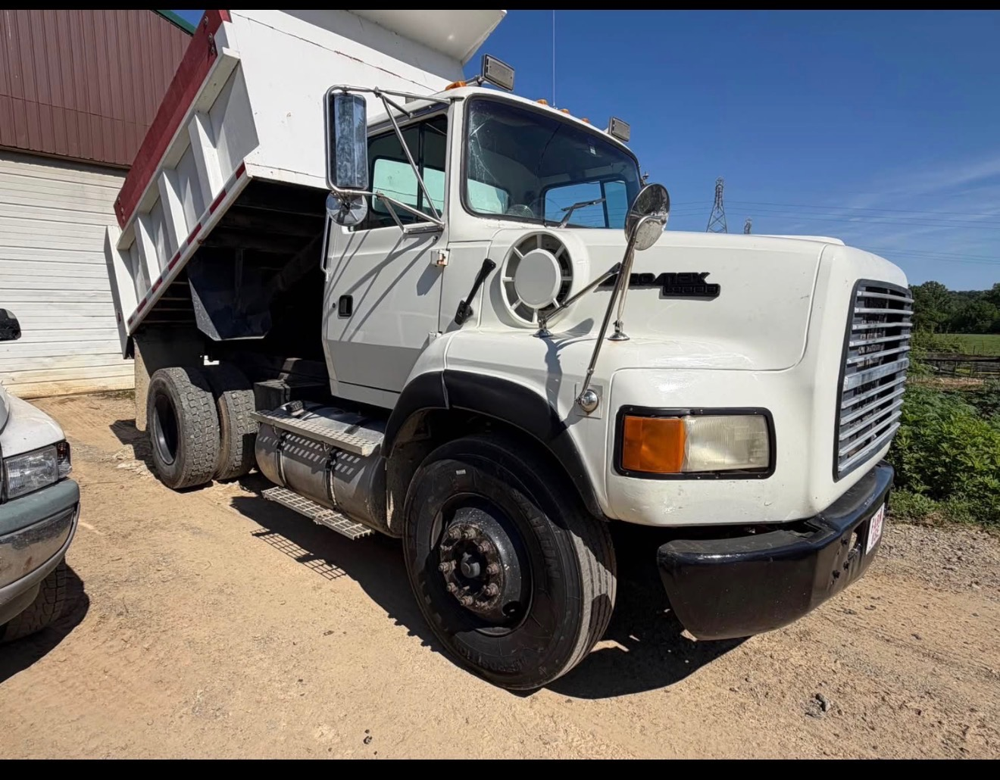
WHERE WE WORK
Bookmyer Excavating is based in York, Pennsylvania and provides excavation, grading, driveway, and drainage services throughout York County, including:
Don't see your town? If you're anywhere in the York area, give us a call at (717) 804-7133 — chances are we cover it.
COMMON QUESTIONS
Yes — small jobs are our specialty. Most excavation companies in York, PA won't return a call for a backyard regrade or a single load of stone. We built Bookmyer Excavating around exactly those jobs: shed pads, drainage fixes, gravel driveway touch-ups, trenching, and any other small dirt work homeowners need done right.
It depends on the length of the driveway, the condition of the existing base, and the type of stone you choose — 2A modified, clean stone, or asphalt millings. We give free on-site estimates so you get a real number, not a guess. Call or text (717) 804-7133.
Yes. We deliver stone, screened topsoil, and asphalt millings throughout York County with our own dump truck — and unlike a quarry delivery, we can also spread and grade the material after we dump it.
A gravel shed pad should typically extend at least a foot beyond the shed on every side. We excavate, lay fabric, build a level compacted stone pad, and can frame it with timbers — ready for your shed delivery day.
A storm water pit — also called a dry well or seepage pit — is a gravel-filled pit that collects roof and surface runoff and lets it soak into the ground instead of pooling in your yard or running toward your foundation. If you have standing water after storms or a soggy spot that never dries out, it's usually the fix.
Yes. Cutting bamboo doesn't kill it — it spreads underground through rhizomes. We excavate the entire root system, haul it away, and regrade the area with clean topsoil so it doesn't come back.
We're based in York, PA and serve all of York County — including Dover, Dallastown, Red Lion, Manchester, Mount Wolf, Spring Grove, Windsor, Wrightsville, Jacobus, Seven Valleys, and everywhere in between.
Call or text (717) 804-7133, email seannbookmyer@gmail.com, or send the contact form below. We'll take a look at your project and give you a free, no-obligation estimate.
GET IN TOUCH
Have a project in mind in York or anywhere in York County? We'd love to hear from you. Reach out for a free estimate or to discuss your excavation, grading, or driveway project.